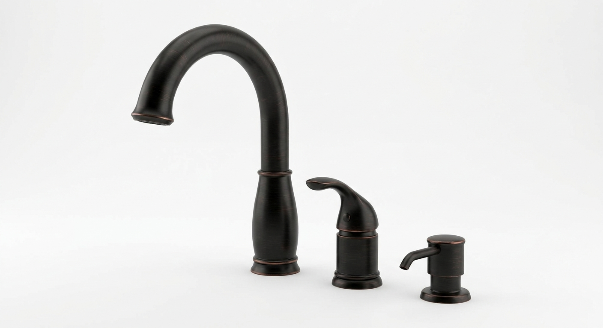

A log-sided house in the woods above Berkeley Springs, West Virginia —
cathedral glass, fieldstone chimney, screened porch, hot-tub deck. Shown here as it will
present at listing, with the refresh now underway.
The house
Built in 2008, log-sided over a stone-skirted foundation, with red oak
floors and trim throughout. Two bedrooms, two full baths and a half bath, a loft over the
great room, and a walk-out basement with a drawn and priced two-bedroom finish plan that
conveys with the house. The great room rises two stories to a glass gable; a wood stove
sits in the fieldstone chimney that runs from grade to the ridge. The interior's whites
stay as they are; the refresh repaints the kitchen and bathrooms, the doors and the
outdoor floors.
The back corner: deck, hot tub and the glass gable
The whole back of the house: glass gable, chimney, screened porch, wrap deck
Winter, with the wood stove going
The great room from the loft rail — white walls, oak, stone
The island looks into the great room and the glass wall
Toward the loft stair
The wood stove in the fieldstone chimney
The loft: media room, office, or overflow sleeping
Kitchen
Granite, stainless appliances, the Venetian Bronze faucet set and antiqued brass pulls
The range run, freshly painted in warm white
Bedrooms
Main-floor master, blue with oak trim
Second bedroom over the garage
Baths
Master bath: double granite vanity, jacuzzi, separate shower — new
faucets and brass knobs
Upstairs bath, repainted in stone grey
Outdoor living
The 45-foot screened porch, floor refinished in walnut
The deck at the chimney, walnut floor — the HotSpring Flair at the far end, cover away; it conveys
The back yard from the deck: stone garden beds, the septic-cover garden by the shed — firepit photograph to come
The ridge line beyond the property
Fixtures & finishes
Hardware finish, decided: antiqued brass. The house's doors
already carry antiqued brass knobs and hinges, so the cabinet pulls and knobs join a finish
the house has worn since 2008 — warm against the golden oak, and of a piece with the
historic paint colours. Plumbing finish, decided: Venetian Bronze, Delta's oil-rubbed bronze, on every
faucet and trim — dark against the oak, at home beside the aged brass, and priced
through on the sale-prep page with no premium over
nickel.

Kitchen set, Venetian Bronze: spout, side handle and soap dispenser
— representative style
Cabinet hardware: antiqued brass bar pulls and knobs, ~44 pieces
Product images are representative
of style and finish, not the exact SKU; final models are chosen at order time from the
Delta brushed-nickel lines and a single antiqued-brass hardware range.
Room to grow
The walk-out basement is unfinished today and fully drawn: a complete,
contractor-ready CAD set — existing conditions, proposed plan, schedules, and
fourteen trade sheets — for two more bedrooms, a jack-and-jill bath, a den and a flex
room, with paint colours already chosen to match the house. The drawing set and its pricing
history convey.